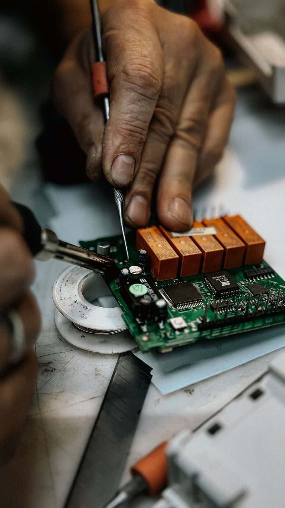

The scientist

Dr Mara Ellison — I fly other people’s instruments, carefully
I came to balloons through atmospheric physics: a doctorate on stratospheric transport, then six seasons with a university atmospheric measurement group, flying as the person who stood in the field at dawn with the flight plan and the final say. In 2016 I went independent, because instrument teams kept needing the same thing — not a balloon, but a campaign: forecast, permissions, launch, tracking, recovery, and a report a scientist can cite.
Forty-seven flights later the practice is deliberately small. I fly every campaign myself, with a crew of three I have worked with for years. I do not take flights I cannot recover-plan, and I do not hand the cutdown decision to anyone who is not standing in the field — that decision is mine, it is written into every contract, and flight STR-35 is what it looks like when it costs us both something.
My standing advice to new instrument teams costs nothing and saves campaigns: if your instrument cannot survive being lost, it is not ready to fly. Fly a cheaper build first, break it at 30 km, and bring me the one that learned something.
Training & standing: atmospheric physics doctorate · flight-direction and range-safety training · radio licence for telemetry links · insured for flight operations and recovery — certificates available with any proposal.
The working page
How a campaign runs
Six stages, in the order the log records them. Nothing here is exotic — the discipline is in doing all six, every flight, including the boring ones.
01
Forecast & trajectory prediction
From about a week out, we run trajectory predictions on the forecast wind fields: ascent at the planned rate, float or burst at the target altitude, descent under parachute. The output is a landing ellipse, not a landing point — anyone who gives you a point is guessing in a confident font. The ellipse decides whether the flight is worth flying at all.
02
Permissions & airspace
Balloon flights in controlled airspace run on permission: the aviation authority is notified, a NOTAM is issued where required, and the flight plan carries the predicted corridor. This is arranged weeks ahead, and a campaign date is only real once the paperwork is. I will not fly first and file later, and neither should anyone you hire.
03
The launch window
Launches happen in the calm of early morning, inside surface-wind limits set by the balloon size and the site. The morning’s own radiosonde sounding — not the standard table, not yesterday’s forecast — makes the final call. If the sky disagrees with the plan, the sky wins and the day becomes a field day, priced as printed.
04
Tracking
The payload train carries GPS position beamed down by radio telemetry, backed by an independent second beacon on a separate network. Two chase vehicles follow the predicted track. A payload that goes quiet is not lost — it is a search problem with a last-known position, a descent model, and a plan written before launch.
05
Cutdown & descent
Flights end by balloon burst at the target altitude or by commanded cutdown — a radio-released separation that starts the descent early. Cutdown authority is agreed in writing before launch: whose call, on what evidence, over which ground. The parachute is sized to bring the payload down at a landing speed instruments survive.
06
Recovery & the written report
We recover on foot, with landowner permission, and leave the site as we found it. Then the part most operators skip: a written flight report — profile, telemetry, decisions, recovery account, data in the client’s format — delivered within days. The report is the product. The flight is how we earn the right to write it.
The honesty page
What I will not tell you
- That the trajectory is a promise. A trajectory is a forecast run on a forecast. The landing ellipse is honest; the landing point would be theatre. Plan for the ellipse.
- That recovery is guaranteed. 44 of my 47 payloads came home. STR-09, STR-19 and STR-41 did not — one to a beacon failure, one to water, one never explained. Insure instruments accordingly, and fly the cheap build first.
- That the standard table is the day’s sky. The converter on this site interpolates the International Standard Atmosphere — a shared reference, not a measurement. On a hot day the same pressure sits hundreds of metres higher. Flight decisions fly the morning sounding.
- That a scrubbed day is a failed day. Some of the best entries in this log are launches that never happened. The fee for finding that out is a field day, printed in advance — cheaper than the alternative in every currency.
Engagement terms
How booking works
Booking & deposit
A campaign is booked with a signed flight agreement and a deposit of 30% of the planning figure. Dates are held for one named window plus one backup window — weather gets a vote, so every booking carries two chances to fly.
Weather & termination
Scrubbed days bill at the printed field-day rate. If I terminate a flight early on safety grounds, the re-flight bills at the field-day rate, not a second launch fee. If a client terminates against advice, the flight is billed in full — the reasoning is recorded either way.
Data & reports
Telemetry and data are the client’s, delivered in their format with the written report. I keep the flight log entry — profile, decisions, recovery account — and may cite anonymised flight facts (altitudes, distances, outcomes) in this record. Named client stories appear only with written permission.
Insurance & loss
Flight operations and recovery are insured; payloads are flown at the client’s risk for loss, as is standard in balloon work — which is why the honesty page exists and why the recovery allowance is an allowance, not a promise. Payload insurance can be arranged through the client’s own cover and I will supply whatever the underwriter asks for.